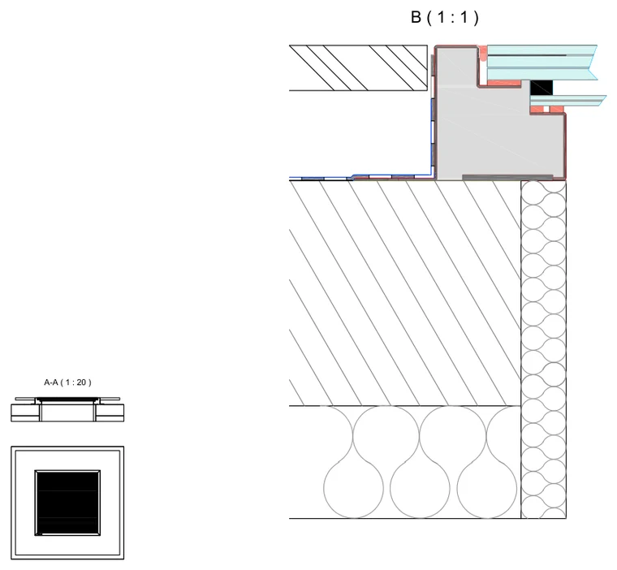
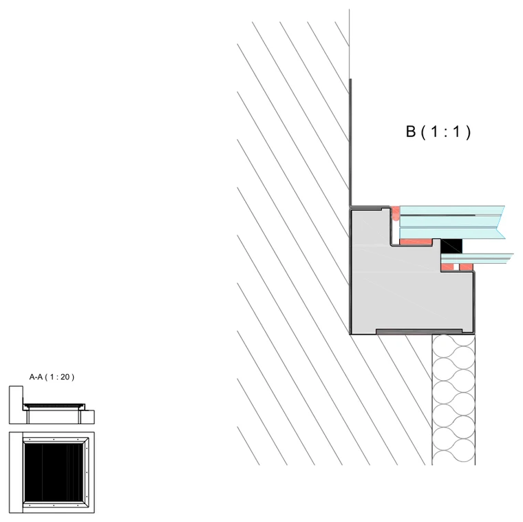
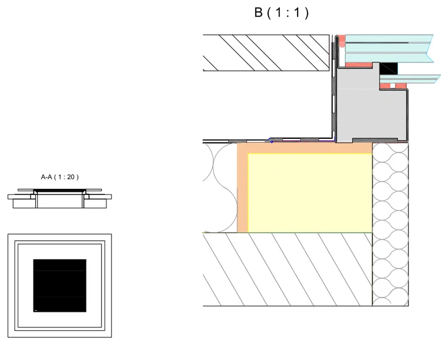
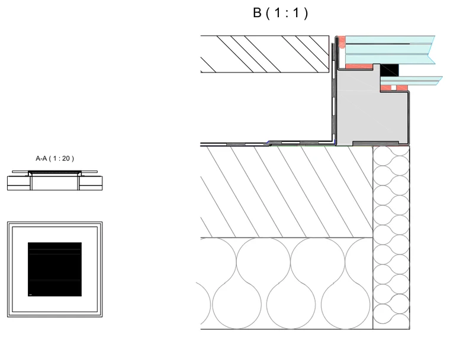
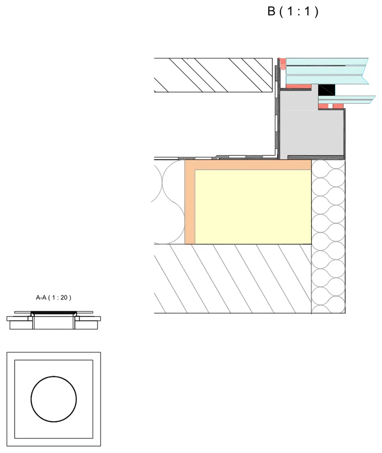
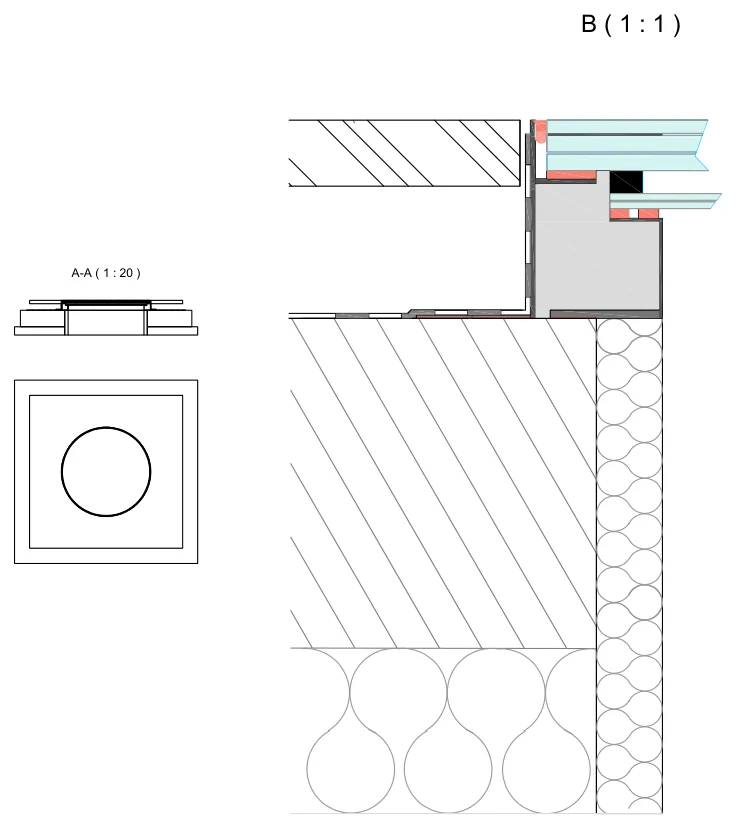
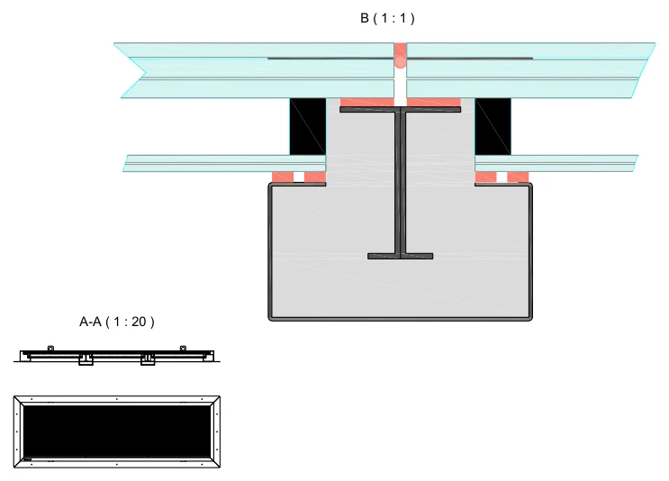
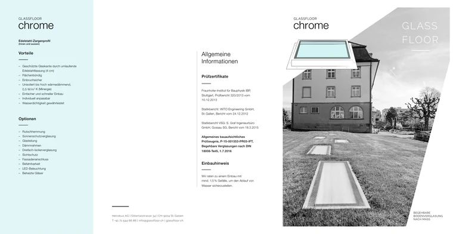
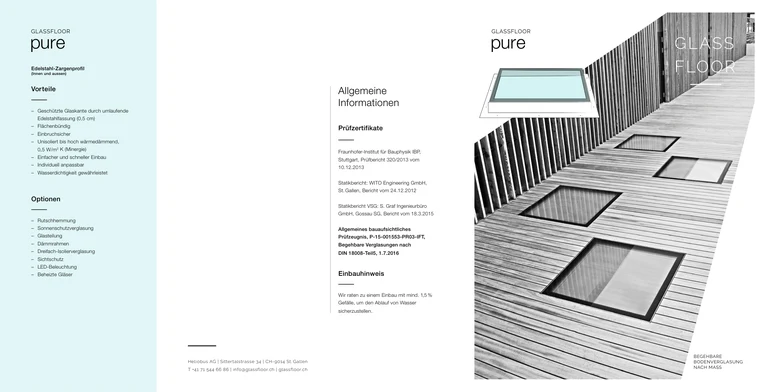
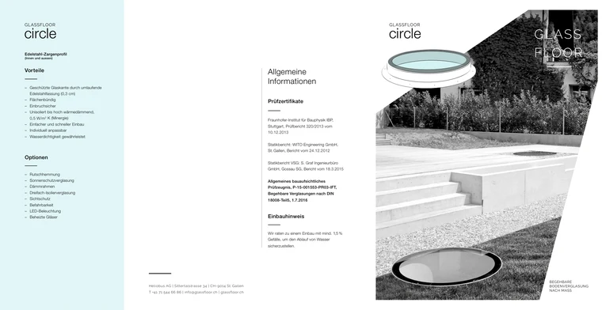

chrome – vnější zateplení
Napojení na teplou střechu, kde izolace leží nad nosnou konstrukcí.
Stáhnout detailTechnické detaily napojení a produktové listy výrobce, volně ke stažení bez registrace. Kreslené v měřítku 1 : 20 s výřezem 1 : 1, se skutečnou skladbou napojení na konstrukci střechy nebo terasy.
Pro každou řadu je zpracovaný řez napojení podle toho, kde leží tepelná izolace. Vyberte detail podle skladby vaší střechy, ne podle vzhledu světlíku.
Napojení na teplou střechu, kde izolace leží nad nosnou konstrukcí.
Stáhnout detail
Skladba, kde je izolace pod stropní konstrukcí, tedy na straně místnosti.
Stáhnout detail
Světlík osazený těsně u stěny, včetně navazujícího klempířského detailu.
Stáhnout detail
Úzký rám řady pure ve skladbě teplé střechy s izolací nad konstrukcí.
Stáhnout detail
Řada pure ve skladbě, kde je tepelná izolace na vnitřní straně stropu.
Stáhnout detail
Kruhový formát v teplé střeše, s izolací uloženou nad nosnou konstrukcí.
Stáhnout detail
Kruhový formát ve skladbě s tepelnou izolací na straně místnosti.
Stáhnout detail
Jak se řeší spára mezi tabulemi u formátů, které přesahují jeden kus skla.
Stáhnout detailDetaily jsou výrobní podklad Heliobus AG. Slouží k orientaci v projektu a nenahrazují posouzení konkrétní stavby. Doporučený spád osazení je nejméně 1,5 %, aby voda z plochy skla odtékala.
Dvoustránkový list ke každé řadě: skladba, tabulka standardních rozměrů, technická data zasklení a přehled zkušebních protokolů. Listy jsou v originále výrobce, tedy v němčině. Českou verzi na vyžádání připravíme.

Přiznaný nerezový rám 4 cm. Art. 3010, neizolované provedení Art. 3050.
Stáhnout list
Filigránový rám 0,5 cm. Art. 3110, neizolované provedení Art. 3150.
Stáhnout list
Kruhový formát, rám 0,3 cm. Art. 3130, neizolované provedení Art. 3170.
Stáhnout listKonstrukce je doložená nezávislými zkouškami a statickými posudky. Úplná znění protokolů posíláme projektantům na vyžádání ke konkrétní zakázce.
| Provedení | Ug (W/m²K) | Prostup energie g (%) | Propustnost světla (%) |
|---|---|---|---|
| Neizolované | 5,0 | 79 | 88 |
| Standard, izolační dvojsklo | 1,1 | 60 | 80 |
| Super ISO, izolační trojsklo | 0,5 | 52 | 73 |
Hodnoty Ug a g podle EN 673 a EN 410. Údaje pocházejí z produktových listů Heliobus AG platných k 3. 9. 2026. Závazné jsou vždy podklady ke konkrétní zakázce.
Detaily ve formátu pro CAD dodáváme přímo k projektu, aby odpovídaly skutečné skladbě konstrukce. Napište nám, na čem pracujete, a pošleme vám je i s posouzením, zda je GLASSFLOOR pro danou konstrukci vhodný.
Napište nám, co stavíte a v jaké jste fázi. Pošleme podklady, které se k projektu skutečně hodí.
Soubory na této stránce jsou podklady výrobce Heliobus AG. Uvádíme je v originálním znění, bez úprav.